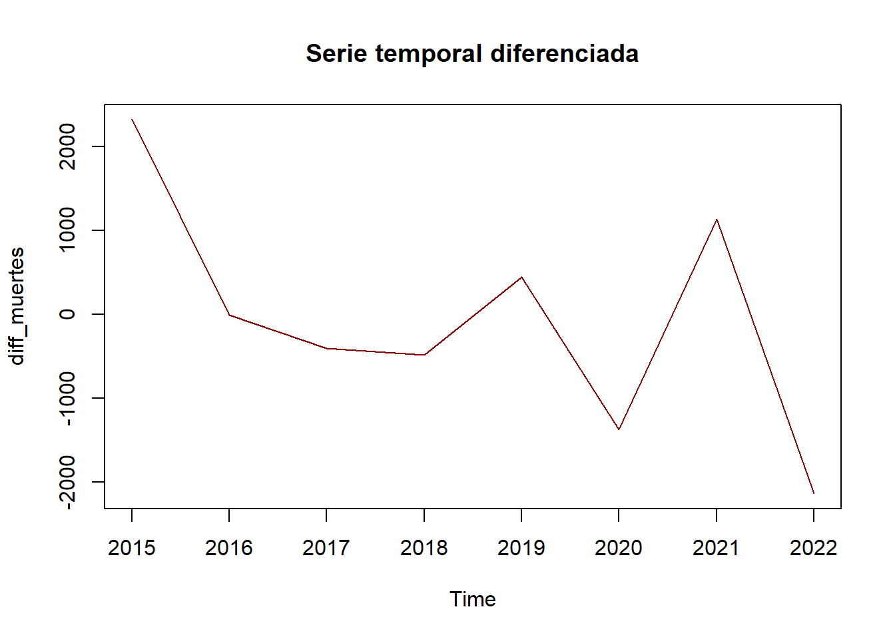
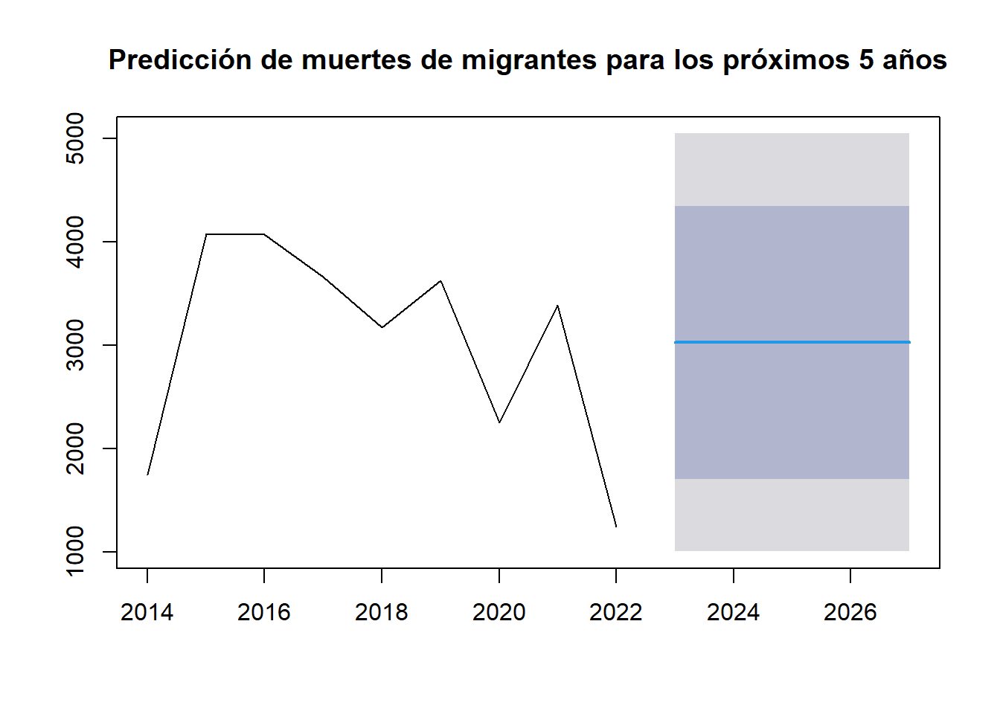
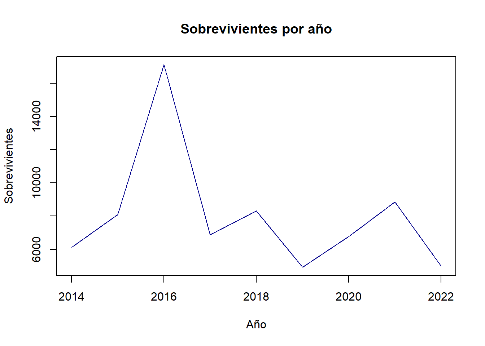
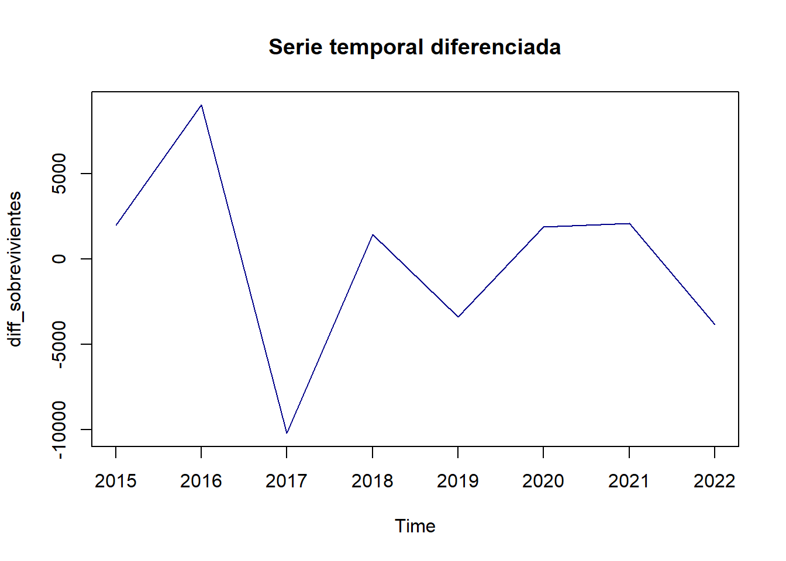
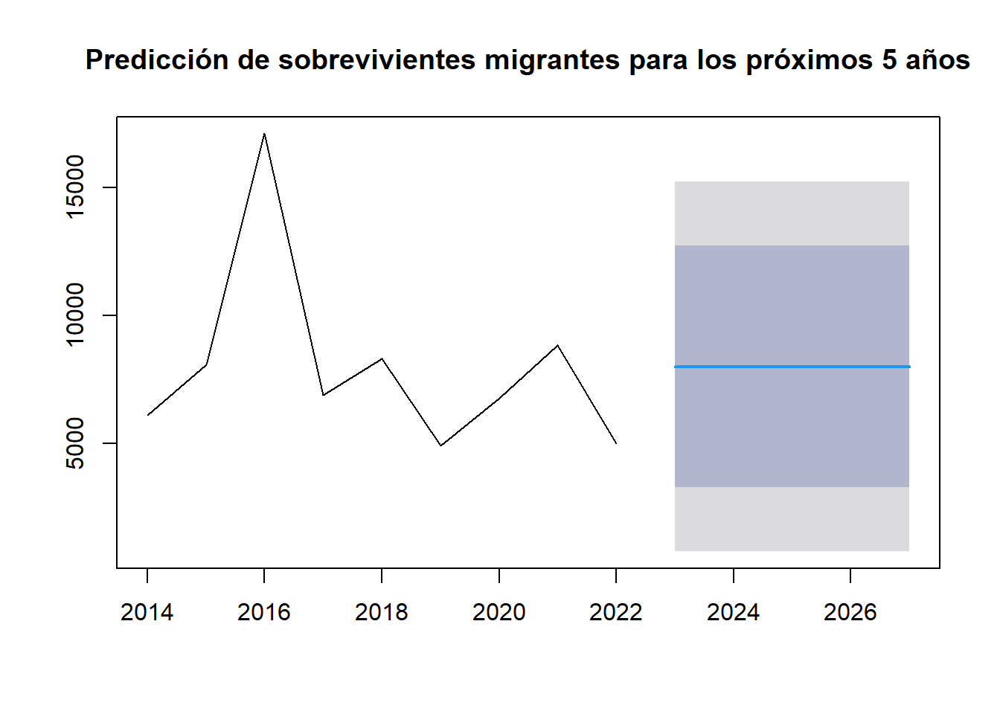
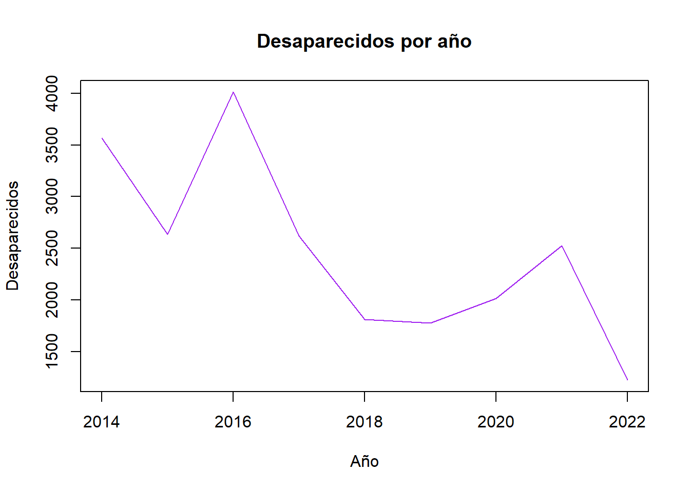
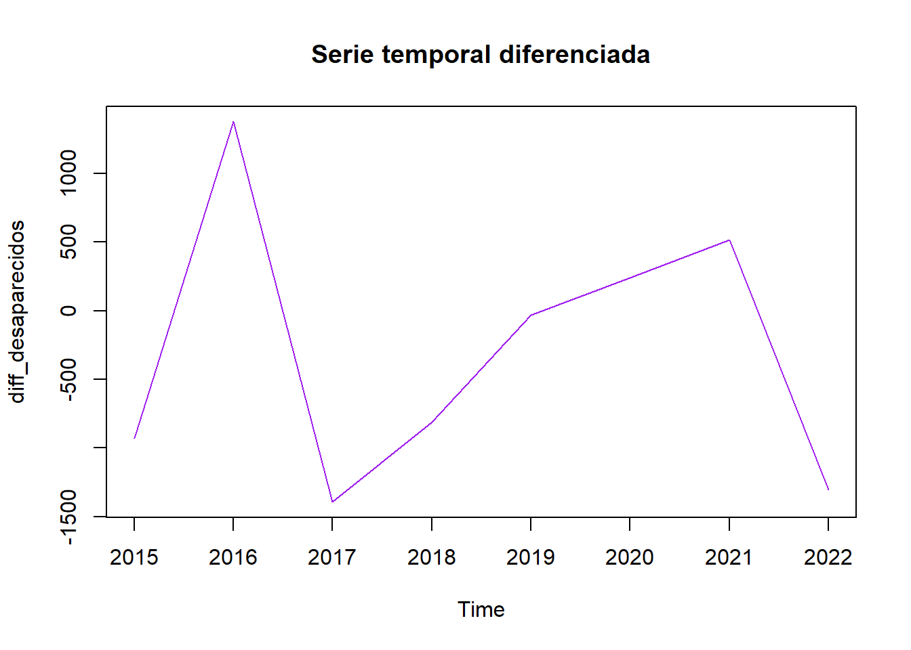
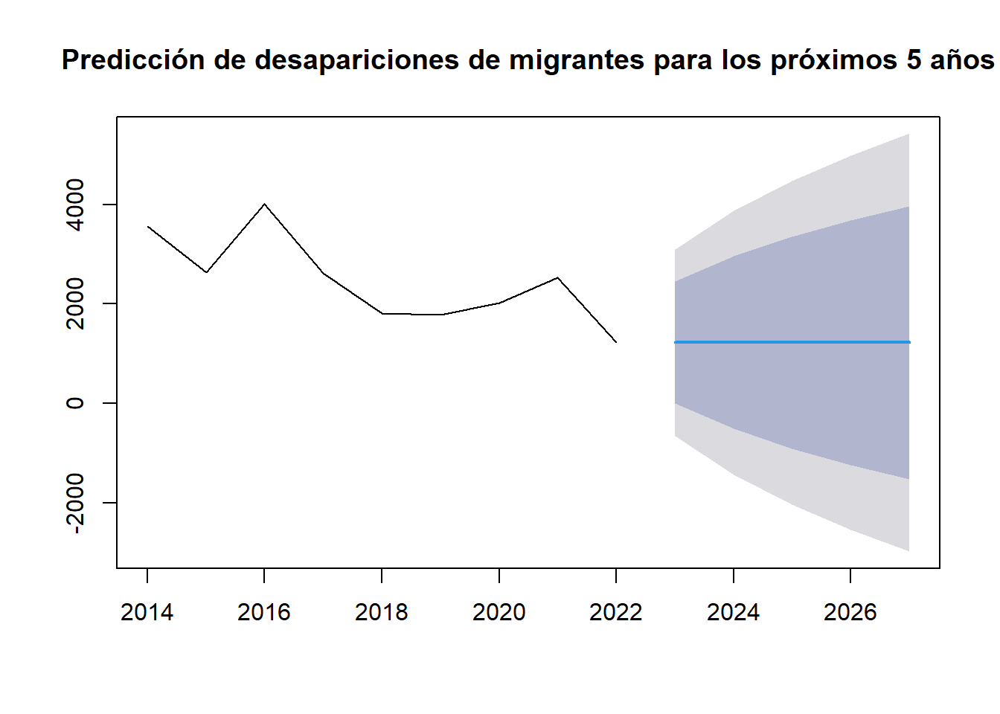

Para esta bitácora se añade un nuevo método: el modelo autorregresivo integrado de media móvil (ARIMA), además de nuevas fichas bibliográficas respecto al nuevo método.
Título: ARIMA para la previsión de series temporales: Guía completa. (Saadeddin 2024)
Autora: Zaina Saadeddin
Nombre del tema: “Cómo utilizar el modelo ARIMA”.
Forma de organizarlo:
Cronológico: Sitio web actualizado el 2024.
Metodológico: El texto presenta un método cuantitativo para obtener previsiones de series temporales.
Temático: Estadístico
Teórico: Método matemático para el análisis de series temporales.
Resumen en una oración: Qué es, cómo se compone y cómo utilizar el modelo ARIMA.
Argumento central: Se presentan el modelo ARIMA junto a sus componentes, además de explicar el código de cómo construir dicho modelo en R.
Problema con el argumento: Ninguno.
Resumen de un párrafo: El modelo autorregresivo integrado de media móvil (ARIMA) permite analizar series temporales para detectar ciertos patrones o tendencias que permitan formar previsiones exactas de series futuras, dicho modelo es principalmente de utilidad en áreas como las finanzas, la economía y en ciencias centradas en el medio ambiente. Además, se explican las series temporales en R y del paquete forecast y la función auto.arima()
Título: Modelos ARIMA para la predicción del gasto conjunto de oxígeno de vuelo y otros gases en el Ejército del Aire. (Gallego-Nicasio Moraleda 2018)
Nombre del tema: “Análisis del gasto de oxígeno y otros gases para previsiones futuras”
Forma de organizarlo:
Cronológico: Artículo publicado en el 2018.
Metodológico: El texto utiliza el método cuantitativo del modelo ARIMA.
Temático: Estadístico
Teórico: Ánálisis del gasto de diferentes gases del ejército aéreo de España para prever futuros gastos.
Resumen en una oración: Se presenta una estimación matemática para la predicción económica del gasto en gases.
Argumento central: Se explica cómo se utilizó el modelo ARIMA para obtener previsiones sobre el gasto en gases, incluyendo la ecuación general y los diferentes componentes.
Problema con el argumento: Ninguno.
Resumen de un párrafo: El ejército aéreo de España ha presentado notables gastos en gases y elementos relacionados sen los últimos años, lo cual se debe a la falta de algún tipo de análisis matemático que presente un manejo óptimo del presupuesto asignado. Además este artículo presenta la ecuación general del modelo ARIMA, donde se explican diferentes componentes utilizados como el autorregresivo, el de media móvily el integrado junto el operador de retardo y sus coeficientes respectivos, además de tomar en cuenta el componente aleatorio.
3.1 Parte de Planificación
3.1.1 Análisis de Modelación
Primero se cargan los datos recolectados del 2014 al 2022:
Código
library(tidyverse)library(knitr)library(countrycode)lista_archivos <-lapply(X =dir(path ="data/"), FUN =function(f){read_csv(paste0("data/", f)) })migrantes_desaparecidos <-bind_rows(lista_archivos) |> janitor::clean_names()migrantes_desaparecidos <- migrantes_desaparecidos |>#separate_wider_delim(col, delim)separate(coordinates,into =c("latitud", "longitud"),sep =",", fill ="left" )migrantes_desaparecidos$latitud <-as.numeric(migrantes_desaparecidos$latitud)migrantes_desaparecidos$longitud <-as.numeric(migrantes_desaparecidos$longitud)#separa las coordenadasmigrantes_desaparecidos <- migrantes_desaparecidos |>#extrae la fecha exactamutate(incident_date =as.Date(str_extract(incident_date,"\\b\\d{2}/\\d{2}/\\d{4}\\b"), format ="%m/%d/%Y") )migrantes_desaparecidos <- migrantes_desaparecidos[ , -c(1, 6, 9, 16, 20:21)] #elimina la columna 1migrantes_desaparecidos <- migrantes_desaparecidos |>mutate(location_of_death =str_remove_all(location_of_death, " \\(see coordinates for exact location\\)") )migrantes_desaparecidos <- migrantes_desaparecidos |>#Extrae países y causas de muertemutate(country_of_death =countrycode(location_of_death,origin ='country.name',destination ='country.name'),cause_of_death =str_extract(cause_of_death, "^[^/]+"),region =str_extract(region, "Asia|America|Africa|Europe|Caribbean|Mediterranean"),region =str_replace(region, "Caribbean", "America") )migrantes_desaparecidos$cause_of_death <-as.factor(migrantes_desaparecidos$cause_of_death)migrantes_desaparecidos$region <-as.factor(migrantes_desaparecidos$region)migrantes_desaparecidos$country_of_death <-as.factor(migrantes_desaparecidos$country_of_death)ts_muertes <- migrantes_desaparecidos |>group_by(year) |>summarise(muertes =sum(number_dead, na.rm =TRUE) )ts_muertes <-ts(ts_muertes$muertes, start =min(ts_muertes$year), end =max(ts_muertes$year), frequency =1)ts_sobrevivientes <- migrantes_desaparecidos |>group_by(year) |>summarise(sobrevivientes =sum(number_of_survivors, na.rm =TRUE) )ts_sobrevivientes <-ts(ts_sobrevivientes$sobrevivientes, start =min(ts_sobrevivientes$year), end =max(ts_sobrevivientes$year), frequency =1)ts_desaparecidos <- migrantes_desaparecidos |>group_by(year) |>summarise(desaparecidos =sum(minimum_estimated_number_of_missing, na.rm =TRUE) )ts_desaparecidos <-ts(ts_desaparecidos$desaparecidos, start =min(ts_desaparecidos$year), end =max(ts_desaparecidos$year), frequency =1)glimpse(migrantes_desaparecidos)
# Cargar datosdata <-read.csv("data/MissingMigrants-Global-2022.csv")# Filtrando datos para la primera regresióndata_filtered <- data %>%select(Number.Dead, Total.Number.of.Dead.and.Missing) %>%drop_na()# Regresión lineal simple: Número de muertos y Total de muertos y desaparecidosmodel1 <-lm(Number.Dead ~ Total.Number.of.Dead.and.Missing, data = data_filtered)summary(model1)
Call:
lm(formula = Number.Dead ~ Total.Number.of.Dead.and.Missing,
data = data_filtered)
Residuals:
Min 1Q Median 3Q Max
-14.067 -0.329 -0.329 -0.329 16.825
Coefficients:
Estimate Std. Error t value Pr(>|t|)
(Intercept) 1.14579 0.07027 16.3 <2e-16 ***
Total.Number.of.Dead.and.Missing 0.18317 0.01065 17.2 <2e-16 ***
---
Signif. codes: 0 '***' 0.001 '**' 0.01 '*' 0.05 '.' 0.1 ' ' 1
Residual standard error: 1.807 on 773 degrees of freedom
Multiple R-squared: 0.2767, Adjusted R-squared: 0.2757
F-statistic: 295.7 on 1 and 773 DF, p-value: < 2.2e-16
# Para la segunda regresión, se codifican las regiones numéricamentedata_filtered_regions <- data %>%select(Region, Number.Dead) %>%drop_na()data_filtered_regions$Region_encoded <-as.numeric(factor(data_filtered_regions$Region))# Regresión lineal simple: Regiones y Número de muertosmodel2 <-lm(Number.Dead ~ Region_encoded, data = data_filtered_regions)summary(model2)
Call:
lm(formula = Number.Dead ~ Region_encoded, data = data_filtered_regions)
Residuals:
Min 1Q Median 3Q Max
-1.6988 -0.6988 -0.5889 -0.4425 20.3744
Coefficients:
Estimate Std. Error t value Pr(>|t|)
(Intercept) 1.88193 0.17257 10.905 <2e-16 ***
Region_encoded -0.03662 0.02078 -1.762 0.0784 .
---
Signif. codes: 0 '***' 0.001 '**' 0.01 '*' 0.05 '.' 0.1 ' ' 1
Residual standard error: 2.12 on 773 degrees of freedom
Multiple R-squared: 0.004001, Adjusted R-squared: 0.002713
F-statistic: 3.105 on 1 and 773 DF, p-value: 0.07842
1. Relación entre el Total de Muertos y Desaparecidos y el Número de Muertos
En este análisis del modelo, se buscó entender la relación entre el total de muertos y desaparecidos y el número de muertos en incidentes migratorios.
La ecuación de la regresión es la siguiente:
\[
\text{Número de muertos} = 1.1458 + 0.1832 \times (\text{Total de muertos y desaparecidos})
\]
Interpretación de Resultados:
Pendiente (\(\beta_1 = 0.1832\)): Por cada persona adicional en el total de muertos y desaparecidos, se espera que el número de muertos aumente en 0.18 personas, en promedio.
Intercepto (\(\beta_0 = 1.1458\)): Si el total de muertos y desaparecidos fuera cero, el modelo indica que el número estimado de muertos sería 1.15 personas. Aunque es correcto, no necesariamente reflejo algo revelador, dado que un total de muertos y desaparecidos igual a 0 no implica migrantes fallecidos.
Este modelo sugiere una relación positiva entre estas dos variables, lo que se espera, puesto que el número de muertos está relacionado con el total de muertos y desaparecidos en un incidente.
2. Relación entre la Región y el Número de Muertos
En este análisis, las regiones se codificaron numéricamente y se realizó una regresión lineal simple para evaluar si el número de muertos cambia entre las distintas regiones.
Pendiente (\(\beta_1 = 0.0774\)): Indica que, en promedio, al cambiar de una región a otra (codificada numéricamente), el número de muertos aumenta en 0.077 personas.
Intercepto (\(\beta_0 = 1.3123\)): Cuando la región es la primera codificada, el número esperado de muertos es de 1.31 personas.
El modelo sugiere que hay diferencias leves en el número de muertos entre las regiones, sin ser un relación significativa. La pendiente es pequeña, lo que indica que el número de muertos no varía drásticamente entre las distintas regiones.
3.1.1.2 Método #3: Modelo autorregresivo integrado de media móvil (ARIMA)
Como se tienen los incidentes reportados por año y a su vez la suma de muertes, sobrevivientes y desaparecidos se puede proyectar el futuro número migrantes muertos, rescatados o desaparecidos en los próximos años.
Recuerde que el modelo ARIMA, según Gallego-Nicasio Moraleda (2018), requiere de tres componentes (Autorregresivos(AR), Integrado(I) y Media Móvil(MA)) que dependen de tres parámetros definidos como:
p: Es el número de observaciones de retraso en el modelo.
d: Es el número de datos anteriores que se resta a cada valor conocido también como grado de diferenciación.
q: Es el tamaño de datos que se utiliza para la media móvil.
\(a_p\): coeficientes para el componente autorregresivo.
\(b_q\): coeficientes para el componente de medias móviles.
\(\varepsilon_t\): componente aleatoria.
Análisis de ARIMA
1. Predicción de muertes de migrantes en los próximos 5 años
Primero se observan algunos patrones o tendencias:
Código
head(ts_muertes)
Time Series:
Start = 2014
End = 2019
Frequency = 1
[1] 1752 4077 4071 3664 3176 3624
Código
plot(ts_muertes, main="Muertes por año", xlab="Año", ylab="Muertes", col="darkred", type="l")
Utilizando la prueba de Dickey-Fuller aumentada se observa si la serie temporal es estacionaria:
Código
library(tseries)adf.test(ts_muertes)
Augmented Dickey-Fuller Test
data: ts_muertes
Dickey-Fuller = -2.9157, Lag order = 2, p-value = 0.2236
alternative hypothesis: stationary
Note que la serie no es estacionaria, pues p-value > 0.05, entonces se procede a diferenciarla:
Código
diff_muertes <-diff(ts_muertes)plot(diff_muertes, main ="Serie temporal diferenciada", col ="darkred")

Ahora se ajusta el modelo ARIMA, donde se utilizará la función auto.arima() del parquete forecast para un mejor manejo de los parámetros AR, I y MA de la serie:
Series: ts_muertes
ARIMA(0,0,0) with non-zero mean
Coefficients:
mean
3027.6667
s.e. 323.9503
sigma^2 = 1062543: log likelihood = -74.68
AIC=153.37 AICc=155.37 BIC=153.76
Training set error measures:
ME RMSE MAE MPE MAPE MASE
Training set 6.063545e-13 971.8449 851.5556 -16.6233 38.94371 0.8189018
ACF1
Training set -0.0912454
Finalmente utilizamos la función forecast() para realizar las predicciones en los próximos 5 años sobre las muertes de migrantes desaparecidos:
$method
[1] "ARIMA(0,0,0) with non-zero mean"
$model
Series: ts_muertes
ARIMA(0,0,0) with non-zero mean
Coefficients:
mean
3027.6667
s.e. 323.9503
sigma^2 = 1062543: log likelihood = -74.68
AIC=153.37 AICc=155.37 BIC=153.76
$level
[1] 80 95
$mean
Time Series:
Start = 2023
End = 2027
Frequency = 1
[1] 3027.667 3027.667 3027.667 3027.667 3027.667
$lower
Time Series:
Start = 2023
End = 2027
Frequency = 1
80% 95%
2023 1706.647 1007.341
2024 1706.647 1007.341
2025 1706.647 1007.341
2026 1706.647 1007.341
2027 1706.647 1007.341
$upper
Time Series:
Start = 2023
End = 2027
Frequency = 1
80% 95%
2023 4348.686 5047.992
2024 4348.686 5047.992
2025 4348.686 5047.992
2026 4348.686 5047.992
2027 4348.686 5047.992
Código
plot(prediccion_muertes, main="Predicción de muertes de migrantes para los próximos 5 años")

2. Predicción de sobrevivientes migrantes en los próximos 5 años
Al igual que con las muertes de migrantes, se observan algunos patrones o tendencias:
Código
head(ts_sobrevivientes)
Time Series:
Start = 2014
End = 2019
Frequency = 1
[1] 6122 8099 17112 6888 8321 4925
Código
plot(ts_sobrevivientes, main="Sobrevivientes por año", xlab="Año", ylab="Sobrevivientes", col="darkblue", type="l")

Utilizando la prueba de Dickey-Fuller aumentada se observa si la serie temporal es estacionaria:
Código
library(tseries)adf.test(ts_sobrevivientes)
Augmented Dickey-Fuller Test
data: ts_sobrevivientes
Dickey-Fuller = -1.4007, Lag order = 2, p-value = 0.8007
alternative hypothesis: stationary
Al igual que con las muertes, note que la serie no es estacionaria, pues p-value > 0.05, entonces se procede a diferenciarla:
Código
diff_sobrevivientes <-diff(ts_sobrevivientes)plot(diff_sobrevivientes, main ="Serie temporal diferenciada", col ="darkblue")

Ahora se ajusta el modelo ARIMA, donde se utilizará la función auto.arima() del parquete forecast para un mejor manejo de los parámetros AR, I y MA de la serie:
Series: ts_sobrevivientes
ARIMA(0,0,0) with non-zero mean
Coefficients:
mean
8011.111
s.e. 1157.820
sigma^2 = 13572881: log likelihood = -86.15
AIC=176.29 AICc=178.29 BIC=176.69
Training set error measures:
ME RMSE MAE MPE MAPE MASE
Training set 8.084397e-13 3473.44 2298.123 -13.41378 28.41677 0.5435004
ACF1
Training set -0.09825737
Finalmente utilizamos la función forecast() para realizar las predicciones en los próximos 5 años sobre los sobrevivientes migrantes desaparecidos:
$method
[1] "ARIMA(0,0,0) with non-zero mean"
$model
Series: ts_sobrevivientes
ARIMA(0,0,0) with non-zero mean
Coefficients:
mean
8011.111
s.e. 1157.820
sigma^2 = 13572881: log likelihood = -86.15
AIC=176.29 AICc=178.29 BIC=176.69
$level
[1] 80 95
$mean
Time Series:
Start = 2023
End = 2027
Frequency = 1
[1] 8011.111 8011.111 8011.111 8011.111 8011.111
$lower
Time Series:
Start = 2023
End = 2027
Frequency = 1
80% 95%
2023 3289.697 790.3312
2024 3289.697 790.3312
2025 3289.697 790.3312
2026 3289.697 790.3312
2027 3289.697 790.3312
$upper
Time Series:
Start = 2023
End = 2027
Frequency = 1
80% 95%
2023 12732.53 15231.89
2024 12732.53 15231.89
2025 12732.53 15231.89
2026 12732.53 15231.89
2027 12732.53 15231.89
Código
plot(prediccion_sobrevivientes, main="Predicción de sobrevivientes migrantes para los próximos 5 años")

3. Predicción de desapariciones de migrantes en los próximos 5 años
Al igual que en los casos anteriores, se observan algunos patrones o tendencias:
Código
head(ts_desaparecidos)
Time Series:
Start = 2014
End = 2019
Frequency = 1
[1] 3566 2637 4013 2620 1811 1777
Código
plot(ts_desaparecidos, main="Desaparecidos por año", xlab="Año", ylab="Desaparecidos", col="purple", type="l")

Utilizando la prueba de Dickey-Fuller aumentada se observa si la serie temporal es estacionaria:
Código
library(tseries)adf.test(ts_desaparecidos)
Augmented Dickey-Fuller Test
data: ts_desaparecidos
Dickey-Fuller = -2.3603, Lag order = 2, p-value = 0.4351
alternative hypothesis: stationary
Igualmente la serie no es estacionaria, pues p-value > 0.05, entonces se procede a diferenciarla:
Código
diff_desaparecidos <-diff(ts_desaparecidos)plot(diff_desaparecidos, main ="Serie temporal diferenciada", col ="purple")

Ahora se ajusta el modelo ARIMA, donde se utilizará la función auto.arima() del parquete forecast para un mejor manejo de los parámetros AR, I y MA de la serie:
Series: ts_desaparecidos
ARIMA(0,1,0)
sigma^2 = 921593: log likelihood = -66.29
AIC=134.57 AICc=135.24 BIC=134.65
Training set error measures:
ME RMSE MAE MPE MAPE MASE ACF1
Training set -259.826 905.0933 733.2851 -19.44727 34.22342 0.8893694 -0.4340032
Finalmente utilizamos la función forecast() para realizar las predicciones en los próximos 5 años sobre los sobrevivientes migrantes desaparecidos:
plot(prediccion_desaparecidos, main="Predicción de desapariciones de migrantes para los próximos 5 años")

3.1.2 Construcción de fichas de resultados
6. Nombre del hallazgo: Predicción de muertes de migrantes en los próximos 5 años.
Resumen en una oración: Se espera que del 2023 al 2027 se reporten 3.028 muertes.
Principal característica: El resultado presenta el número de muertes probable que ocurra en los próximos 5 años.
Problemas o posibles desafíos: Se basa en eventos pasados, incluidos eventos catastróficos como la pandemia de COVID-19, que no ocurren en un horizonte de 5 años.
Resumen en un párrafo: Se puede observar una preddicción puntual de que mueran 3.028 migrantes por año. También se tiene una incertidumbre donde existe un 80% de probabilidad de que el número de muertes de los próximos años se encuentre entre 1.707 y 4.349 muertes por año, que se diferencia en promedio en 1.321 muertes a la predicción central. Por otro lado existe un 95% de que el número de muertes se encuentre entre 1.007 y 5.047, que se diferencia en promedio en 2.020 muertes a la predicción central.
7. Nombre del hallazgo: Predicción de sobrevivientes de migrantes en los próximos 5 años.
Resumen en una oración: Se espera que del 2023 al 2027 se reporten 8.011 muertes.
Principal característica: El resultado presenta el número de sobrevivientes migrantes más probable que ocurra en los próximos 5 años.
Problemas o posibles desafíos: Se basa en eventos pasados, incluidos eventos catastróficos como la pandemia de COVID-19, que no ocurren en un horizonte de 5 años.
Resumen en un párrafo: Se puede observar una predicción puntual de que sobrevivan o sean rescatados 8.011 migrantes por año. También se tiene una incertidumbre donde existe un 80% de probabilidad de que el número de sobrevivientes migrantes en los próximos años se encuentre entre 3.289 y 12.732 por año, que se diferencia en promedio en 4.721 a la predicción central. Por otro lado existe un 95% de que el número de muertes se encuentre entre 790 y 15.231, que se diferencia en promedio en 7.220 muertes a la predicción central.
8. Nombre del hallazgo: Predicción de desapariciones de migrantes en los próximos 5 años.
Resumen en una oración: Se espera que del 2023 al 2027 sean reportados 1.224 migrantes como desaparecidos cada año
Principal característica: El resultado presenta el número de migrantes desaparecidos más probable que ocurra en los próximos 5 años.
Problemas o posibles desafíos: Se basa en eventos pasados, incluidos eventos catastróficos como la pandemia de COVID-19, que no ocurren en un horizonte de 5 años.
Resumen en un párrafo: A diferencia de los casos de muerte y sobrevivencia, la predicción puntual del número de dsaparecidos varía por año como se muestra anteriormente, donde existe una incertidumbre con un 80% de probabilidad de que el menor número esperado es -1527, esto podría indicar que es probable que en vez de reportar migrantes como desaparecidos se puede presenter la certeza de si el migrante ha muerto o ha sobrevivido a los diferentes incidentes o por otro lado se recolecte menos información sobre desaparecidos en los últimos años.
9. Nombre del hallazgo: Más sobrevivientes que muertos
Resumen en una oración: Se espera que se rescaten 4.983 más migrantes que los que no logran sobrevivir.
Principal característica: El hallazgo compara los resultados 7 y 8 y presente un mayor número de sobrevivientes al número de muertes en un futuro.
Problemas o posibles desafíos: No se toma en cuenta los desaparecidos, debido a que podría tratarse de posibles sobrevivientes o de muertos.
Resumen en un párrafo: Se puede observar que al utilizar el mismo modelo ARIMA para la predicción de la muerte de migrantes y sobrevivientes, la predicción puntual de los sobrevivientes se encuentra 4.983 por encima que la de muertes futuras, lo cual indica que la mayoría de incidentes son reportados al realizar rescates o por lo menos presentan algún sobreviviente.
3.2 Parte de Escritura
3.3 Parte de reflexión
Gallego-Nicasio Moraleda, Mínguez Novella, Rodríguez Aranda. 2018. «Modelos ARIMA para la predicción del gasto conjunto de oxígeno de vuelo y otros gases en el Ejército del Aire». Madrid 74 (4): 1887-8571. https://doi.org/10.4321/s1887-85712018000400002.